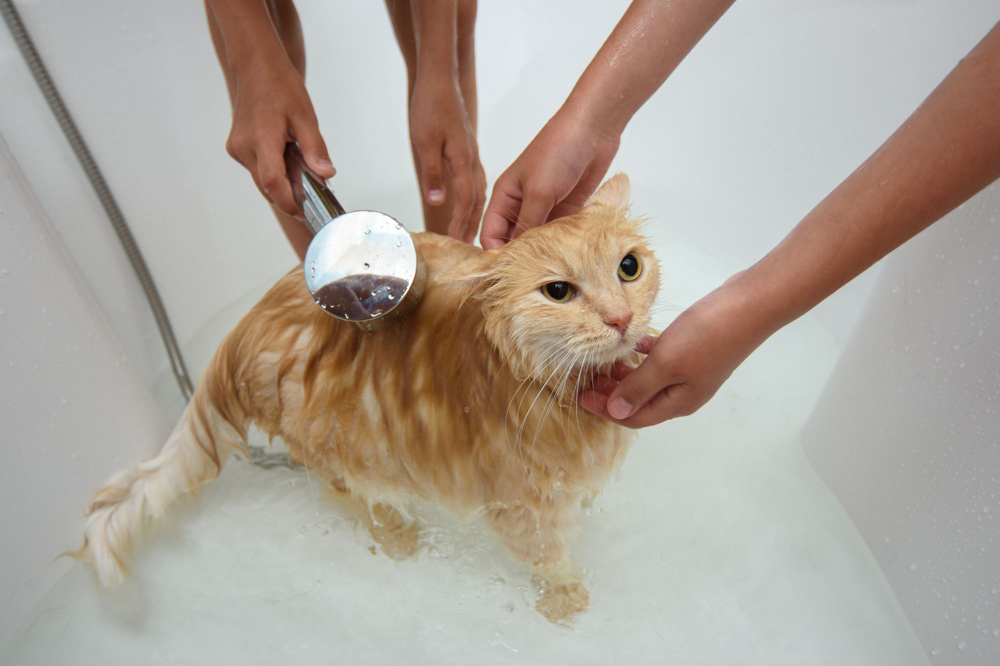

Higiene
El baño en gatos: ¿Misión imposible o necesaria?
Los gatos son famosos por su limpieza fastidiosa. Pasan hasta el 50% de su tiempo despiertos acicalándose. Por eso, la regla general es que un gato sano y de pelo corto raramente necesita un baño. Sin embargo, hay excepciones donde nuestra ayuda es indispensable.
1. ¿Cuándo es necesario bañar a un gato?
Aunque se limpian solos, existen situaciones específicas donde el baño es recomendado:
- Suciedad excesiva o tóxica: Si se manchó con grasa, aceite de motor, pintura o alguna sustancia química que no debe lamer.
- Gatos obesos o artríticos: Si tienen dificultades para alcanzar ciertas partes de su cuerpo (generalmente la zona trasera), necesitan ayuda para evitar infecciones en la piel.
- Razas de pelo largo: Persas o Maine Coons pueden necesitar baños ocasionales para evitar nudos severos.
- Razas sin pelo: Los Sphynx necesitan baños frecuentes para remover la grasa corporal que se acumula en su piel.
2. Cómo hacer del baño una experiencia segura
Si tienes que bañarlo, la preparación es clave. Usa agua tibia (nunca caliente) y un champú específico para gatos (el pH humano es dañino para ellos).
Coloca una alfombrilla de goma en el fondo de la bañera o pileta para que el gato tenga tracción y no entre en pánico al resbalar. Sé breve, mantén la calma y ten una toalla lista para envolverlo inmediatamente.

3. Alternativas al agua y jabón
Si tu gato entra en pánico con el agua, no lo fuerces. Existen toallitas húmedas para mascotas o champús en espuma seca que permiten limpiar la suciedad superficial y mejorar el olor sin el estrés de la inmersión.